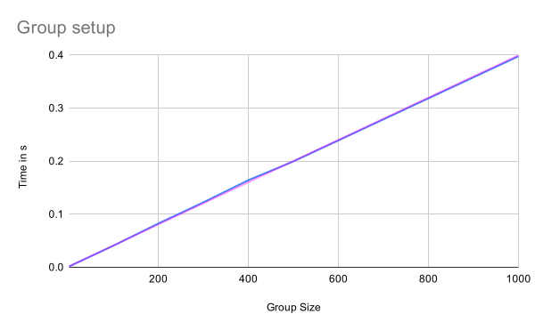
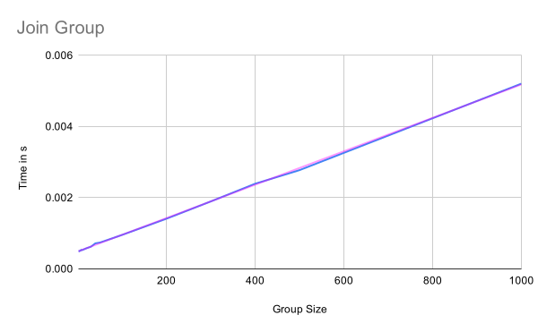
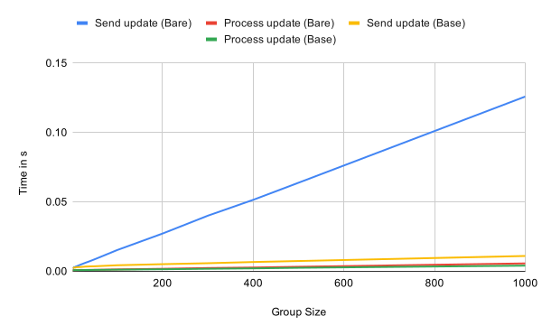
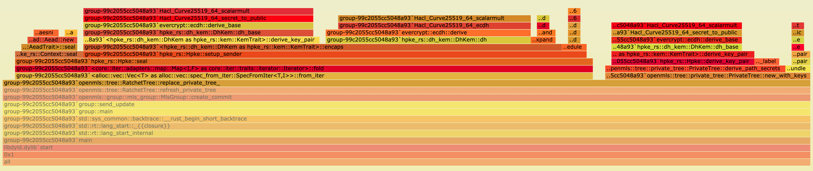
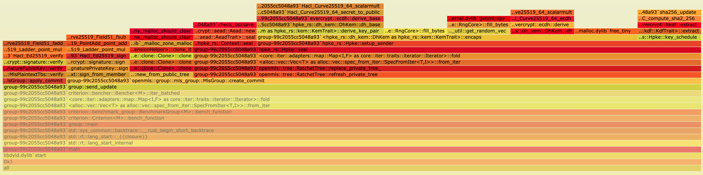
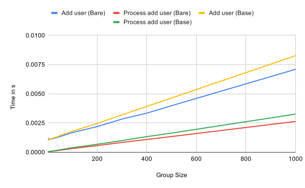
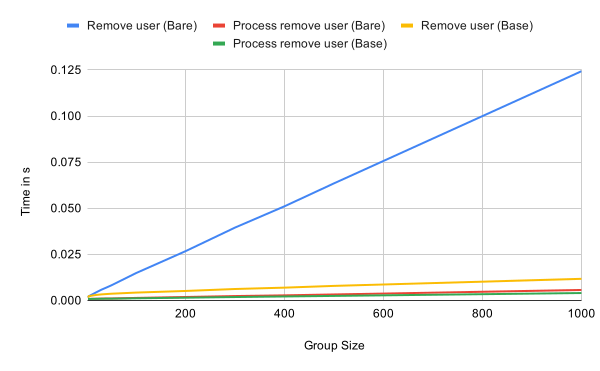
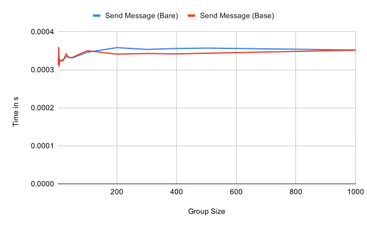
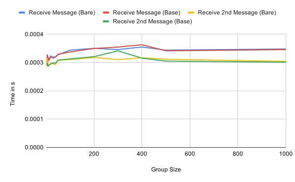

OpenMLS Performance
The Messaging Layer Security (MLS) protocol is an IETF proposal for group key establishment and message protection. OpenMLS is a Rust implementation of the MLS protocol in its current state (draft 11 as of the point of writing this) that is being implemented by Raphael, Konrad and myself. For more general information on MLS I refer to the spec and other blog posts. This blog post is only about MLS, and in particular OpenMLS, performance.
One goal of MLS is that it is supposed to be scalable. The charter in particular claims the following:
Resource requirements have good scaling in the size of the group (preferably sub-linear)
While performance can be theoretically analysed for MLS it is also interesting to see whether the performance goals hold up in a real implementation. This of course only looks at a single implementation. Nonetheless, I think that it gives a good impression on the actual performance of MLS implementations. Particularly because OpenMLS at this point is not optimised but rather implements the MLS spec as is.
Methodology
MLS is a pretty complex protocol with many moving parts. It is therefore important to clearly define what is being measured and how.
First, all tests are done with the only mandatory cipher suite in MLS 1.0 MLS10_128_DHKEMX25519_AES128GCM_SHA256_Ed25519. While other cipher suites obviously have different performance, the goal here is to investigate the general performance of MLS depending on the group size. The exact cipher suite used is therefore irrelevant.
Measurements
The measurements here do not cover all possible messages in MLS. Not all of them are fully supported by OpenMLS yet. Pre-shared key, re-init, external-init, app-ack, and external proposals will be checked once they are implemented. The measured messages nonetheless represent the core of the MLS protocol and should give a good idea of the general performance of the protocol. We test performance of group creation, group join as well as the three basic messages update, add, and remove, and application messages.
All measurements except for the first two use one of the following set-ups:
Base: The group is created by a user. All other participants are invited and each participant creates the group locally. Then every participant sends an update message to the group and everyone else processes it.
Bare: The group is created by a user. All other participants are invited and each participant creates the group locally. This creates an extremely sparse version of the underlying tree in MLS and is therefore interesting to look at.
Measurements are run on different group sizes. When running benchmarks with large groups such as 1000 participants a lot of memory is used in order to simulate all devices (up to 10 GB) such that larger groups are hard to simulate. The chosen group sizes allow us to get a good idea how MLS performs depending on the group size. We in particular test groups of the size 2, 3, 4, 5, 6, 7, 8, 9, 10, 20, 30, 40, 50, 100, 200, 300, 400, 500, 1000.
Operations
- Group creation: Creating a group involves creating the group, proposals and welcome messages for the other participants, and applying the commit.
- Join group: Joining a group is equivalent to processing a welcome message to locally create the new group.
- Update messages: Sending an update to a group involves creating a proposal, the corresponding commit and applying the commit. When receiving an update message the commit is being processed.
- Adding a user: When a new user is added to the group the add proposal and welcome message are created and the commit is locally applied by the adder. When receiving a commit with an add proposal it is processed by the user.
- Removing a user: When a user is removed from the group the remove proposal and commit are created and locally applied by the remover. When receiving a commit with a remove proposal it is processed by the user.
- Application messages: Sending an application message consists of creating the plaintext message and encrypting it for the group. In order to receive an application message the user has to decrypt and parse the message. We measure performance of a single message that is being sent and processed. Note that the processing time of subsequent messages is not significantly different from the first one.
Results
You can find the raw data and some more graphs in the OpenMLS performance spreadsheet.
All measurements were performed on a laptop with Arch Linux, an Intel Core i7-4900MQ @ 2.80GHz and 16 GB memory.
Group setup
As the following graph shows the time needed to create a group is linear in the number of participants added when creating the group. The blue line shows the actual measurements while the magenta one is a trend line showing the linear relation. This is what is to be expected because the performance is dominated by the creation of welcome messages, which have to be created for each member.

Join group
The performance of joining a group is linear in the group size because the information in the welcome message as well as the tree that is being processed when joining the group are linear in the number of group members. Note that it is not logarithmic because the tree needs to be constructed. This requires processing of each node in some way, which is linear in the group size. The blue line again shows the actual measurements while the magenta one is a trend line for the linear relation.

Update
Sending and processing updates are both sub-linear in the number of group members because the number of computations depend on the height of the tree in the base case.

In the case of a very sparse tree, which we have in the bare case because every leaf only processed the welcome message, the performance of sending an update however is linear in the group size.
When creating a commit for an update proposal the sender has to include a path and refresh the private tree.
The following two flamegraphs show the difference between the base and the bare case.
While it doesn’t show directly what’s going on, it can be seen that in the base case (first flamegraph) the new_with_keys function requires a lot more time relative to the rest of the replace_private_tree function.
This is a strong indicator for where to look for the differences.


Looking at a tree with 300 leaves for example we have to encrypt 299 times (for every other leaf) in the case of a bare tree. In a fully updated tree however only 9 encryptions are necessary, one for each level of the tree. It is therefore expected that the performance of sending an update (with commit) in the bare case is linear in the group size.
Adding a user
Looking at the performance of adding a user and processing an add commit in the following graph we can again see the linear growth in relation to the number of group members. This is almost independent of the state of the tree. The operations appear to be slightly more expensive in a fully updated tree though.

Removing a user
Like updating, removing a user and processing a remove commit are linear in complexity in the base case as the following graph shows. Removing in a very sparse tree is significantly more expensive than in a fully updated tree. The reason is the same as for updating the tree. The remove information has to be encrypted to all other remaining participants in the tree.

Application messages
Sending and receiving application messages is essentially independent of the group size, as expected. Receiving the first message within an epoch has a small overhead compared to subsequent message as seen in the second graph. This should be negligible in practice though.


Analysis
First, the plain performance numbers tell us that the goal of the MLS charter of a protocol that scales well for large groups has been mostly. Depending on the state of the tree some operations might take longer than expected. However, this can be mitigated by the application ensuring that the tree is updated and shrunk regularly. Notably, the real world performance appears to be consistent with the theoretical expectations.
Technical background
The measurements are not done with any Rust benchmarking framework such as criterion. Due to the way criterion works there’s significant overhead in criterion. While the numbers in this post can be reliably reproduced a more thorough measurement framework
The flamegraphs are produced with pprof, a simple to use CPU profiler for Rust.
All measurements were performed on this revision. To reproduce them check out the revision and run
for i in 2 3 4 5 6 7 8 9 10 20 30 40 50 100 200 300 400 500 1000; do \
cargo bench --bench group -- $i; \
doneConclusion & Future work
Measuring performance of a protocol as complex as MLS is pretty difficult. Without an application and elaborate test framework that can simulate many different scenarios it is only possible to get the basic numbers as shown here. While they give a good indicator towards the performance of the MLS protocol they are insufficient to claim any performance of real applications that use MLS.
Nonetheless, the numbers show that the MLS protocol appears to allow for efficient, end-to-end-encrypted messaging in large groups. Sending and receiving application messages is independent of the group size while group operations are sub-linear in the group size in most cases.
When OpenMLS is further developed and we have a messaging client using it another set of measurements should be performed with real world usage scenarios in mind in order to investigate whether the performance we have seen here translates to efficient group messaging in an application. The MLS specification further leaves anything around authentication and authorization policies open to the application. These might be complex procedures and impact the MLS performance as well.